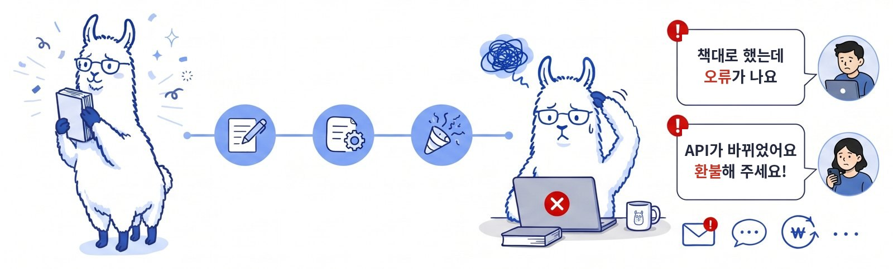
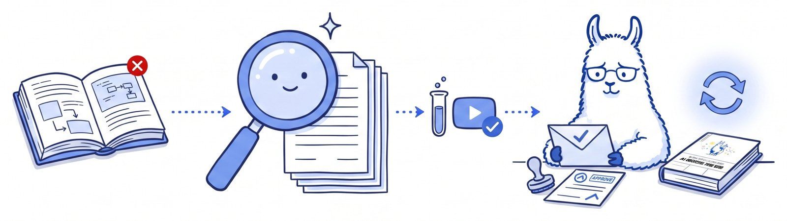
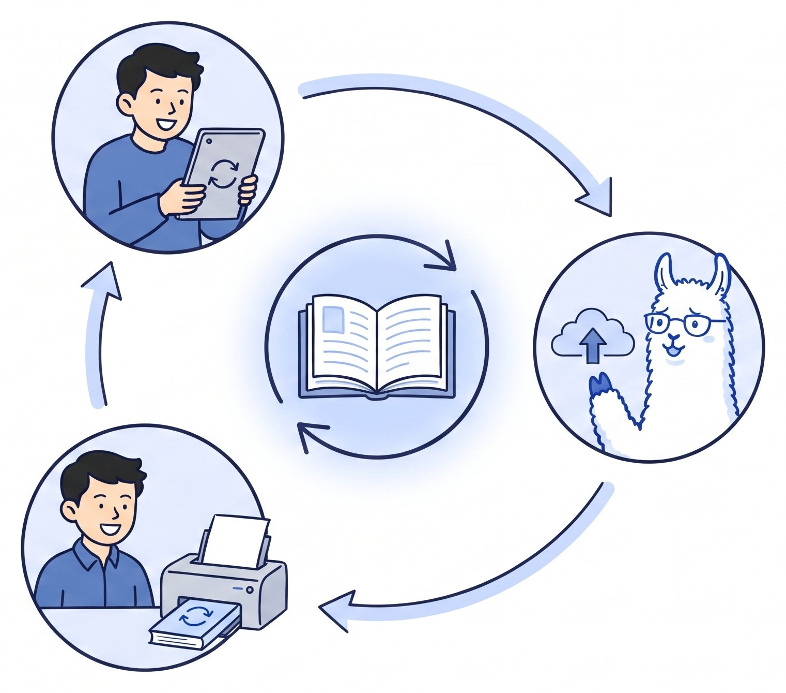

저는 8개월 동안 원고를 쓰고 2개월의 편집을 거쳐 2026년 1월에 『올라마와 오픈소스 LLM을 활용한 AI 에이전트 개발 입문』을 냈어요. 책을 준비하는 사이 LangChain의 주요 버전이 바뀌었고, 출간 직후 독자들이 오류를 알려 왔어요.
“책에 나온 코드를 그대로 따라 했는데 오류가 납니다.”
기술서의 낡은 코드와 설명을 찾아 고치는 도구
오픈소스가 바뀌면 Liner가 공식 문서를 찾아 코드와 설명을 고치고, 실행을 확인한 수정안을 저자에게 보내요.

저는 8개월 동안 원고를 쓰고 2개월의 편집을 거쳐 2026년 1월에 『올라마와 오픈소스 LLM을 활용한 AI 에이전트 개발 입문』을 냈어요. 책을 준비하는 사이 LangChain의 주요 버전이 바뀌었고, 출간 직후 독자들이 오류를 알려 왔어요.
“책에 나온 코드를 그대로 따라 했는데 오류가 납니다.”
책의 공개 예제 저장소 · 업데이트된 v1.5.2에서 import 단계 확인 · 2026-11-22
책대로 따라 해도 예제가 멈추고, 고친 코드와 책 설명이 달라 헤매요.
이틀 동안 64개 파일을 손으로 고쳤지만 오류가 한 곳 남았어요.
이미 팔린 책에 고친 내용을 반영하기 어려워요.
PyPI에서 새 버전을 확인하고, 책에 등록한 라이브러리로 영향받는 장을 골라요. Liner 에이전트가 예제와 설명을 고치고 실행을 요청하면 검증기가 격리 환경에서 확인해요. 저자는 수정안·정오표·전자책을 검토하고 반영 여부를 정해요.

오류를 읽고 검색, 수정, 다시 실행하기 중 다음 작업을 골라요.
공식 문서에서 바뀐 기능과 수정 근거를 찾아요.
별도 장 점검 실험에서 한 번 썼어요.
7장 예제를 고친 실제 순서
장 점검 실험에서 인용 30건을 Liner 검색 결과 요약과 대조했고, 모두 일치했어요.
가상 원고 3장 기준. 개발 때 보지 않은 원고도 11/11.
1·4·7장과 예제 파일 개정, 3장 유지. 정오표·EPUB 생성.
공개 저장소 vivo-books-sample-book에 개정 PR. 같은 기록으로 재생돼요.
최종 3장 실행 시간과 7회 호출 비용 기준.
| 수정 대상 | 고치기 전 | 개정 뒤 |
|---|---|---|
| 7장 예제 코드 | 목표 버전에서 Tool import부터 실패했어요. | create_agent로 바꿔 실행 검사를 통과했어요. |
| 1장 본문·설치 명령 | LangChain 0.3.25 기준 | 검증한 LangChain 1.5.0으로 맞췄어요. |
1.5.2 감지 · 1.5.0에서 코드 실행 및 설치 모의 확인
1장의 테스트용 모델 설명 한 곳은 판단을 보류하고 원문을 유지했어요.
시연은 PyPI·Liner 기록을 쓰고 테스트 모델로 예제를 다시 실행해요. 근거는 저장소 README.md에 있어요.

이번에 만든 것은 저자가 수정안과 개정 전자책을 검토하는 흐름이에요.
다음 목표는 승인한 최신판을 독자에게 배포하고 주문형 인쇄에 연결하는 거예요.
다른 책은 장별 라이브러리, 기대 출력, 테스트 환경을 정해요. 비슷한 15장 점검의 API 비용은 약 $6로 추정해요. 환경 준비 비용은 별도예요.
VIVO BOOKS 아이디어는 모두의창업 1·2차에서 선정됐어요.
제 출간 경험과 비보랩스 발표 그림을 바탕으로 문제를 설명했어요. 그림은 BizRouter로 다시 그렸어요.
Liner 개정 도구, 실행 검증, GitHub 수정 제안, 공개 가상 기술서와 웹 데모를 새로 만들었어요. 자동 테스트 101개가 통과했어요.